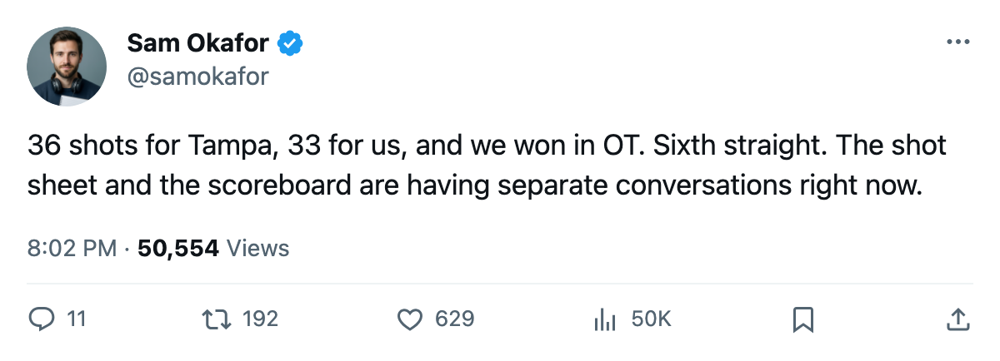

TOR 3, TB 2 OT: 6 straight, 36 shots against, and a shot sheet that keeps ignoring the scoreboard
The Maple Leafs extend their win streak to 6, and the shot numbers still do not match the wins
 Sam OkaforLeafs beat reporter · Queen City Telegram
Sam OkaforLeafs beat reporter · Queen City Telegram
The piece
Toronto beat Tampa Bay 3-2 in overtime on Saturday at the Air Canada Centre. The Lightning put 36 shots on goal. The Maple Leafs managed 33. It was the second time in three games that the opponent outshot them, and the sixth consecutive win that the possession numbers did not endorse.
On 10/31 against Atlanta, the gap was wider: 31 shots for the Thrashers, 16 for Toronto. The Leafs scored 6 anyway. They scored 2 against Montreal on 11/02 and outshot that opponent 25-22, the lone night in the stretch where the shot sheet matched the result. Then came 33 against 36 from Tampa.
Over 13 games the goal differential reads 44 for, 22 against, a +22 that is the best in the  NOR. The
NOR. The  Toronto Maple Leafs sit at 22 points, 7 ahead of
Toronto Maple Leafs sit at 22 points, 7 ahead of  Boston Bruins in the Northeast. Boston has two games in hand, so the gap is at most 5 points on a points-per-game basis even if the Bruins sweep both.
Boston Bruins in the Northeast. Boston has two games in hand, so the gap is at most 5 points on a points-per-game basis even if the Bruins sweep both.
The win streak is the longest in the division. The losses came on 10/21 to Boston, 2-3, and 10/13 to Montreal, 0-2. The streak began 10/15 with a 6-2 win at New York.
Petr Chlup92 leads the club with 12 points in 13 games.  Barret Jackman88 has 12 points from the blue line, including 9 assists.
Barret Jackman88 has 12 points from the blue line, including 9 assists.  Mats Sundin92 carries 9 points in 22.2 minutes a night.
Mats Sundin92 carries 9 points in 22.2 minutes a night.
The trip ahead
The Leafs are 3-0 on the road this season. They travel to Dallas on Tuesday for the first meeting between the two 2005 Cup Finalists this season, then to San Jose on Wednesday.  Dallas Stars is 7-3-2 with 18 points and has lost two straight.
Dallas Stars is 7-3-2 with 18 points and has lost two straight.
 Mike Modano88 will not play in the Tuesday game. The League's injured list carries a shoulder designation with a return date of 2005-11-09.
Mike Modano88 will not play in the Tuesday game. The League's injured list carries a shoulder designation with a return date of 2005-11-09.
